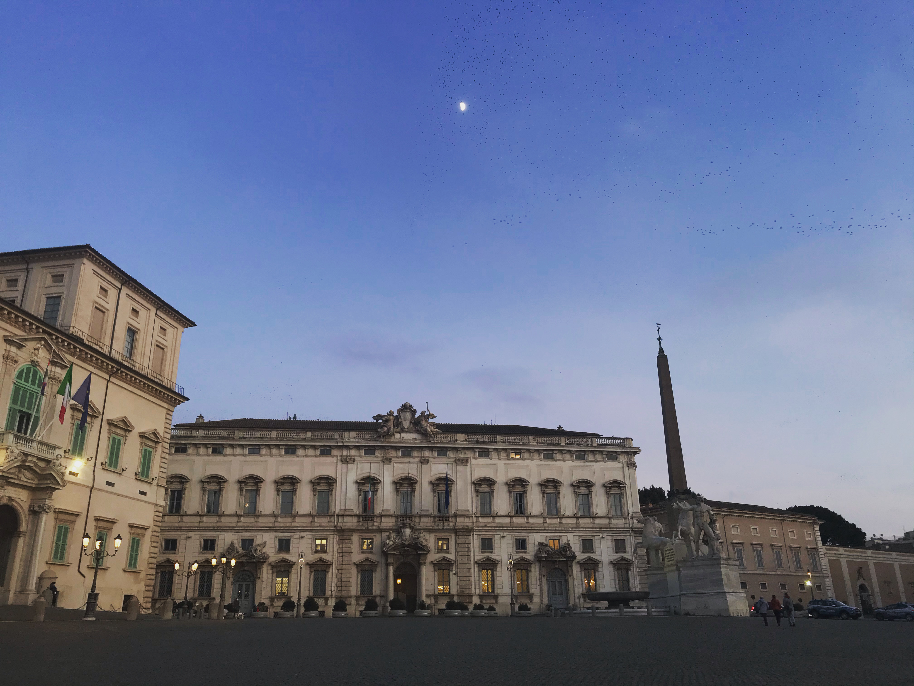
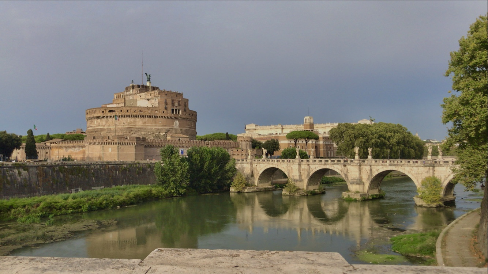
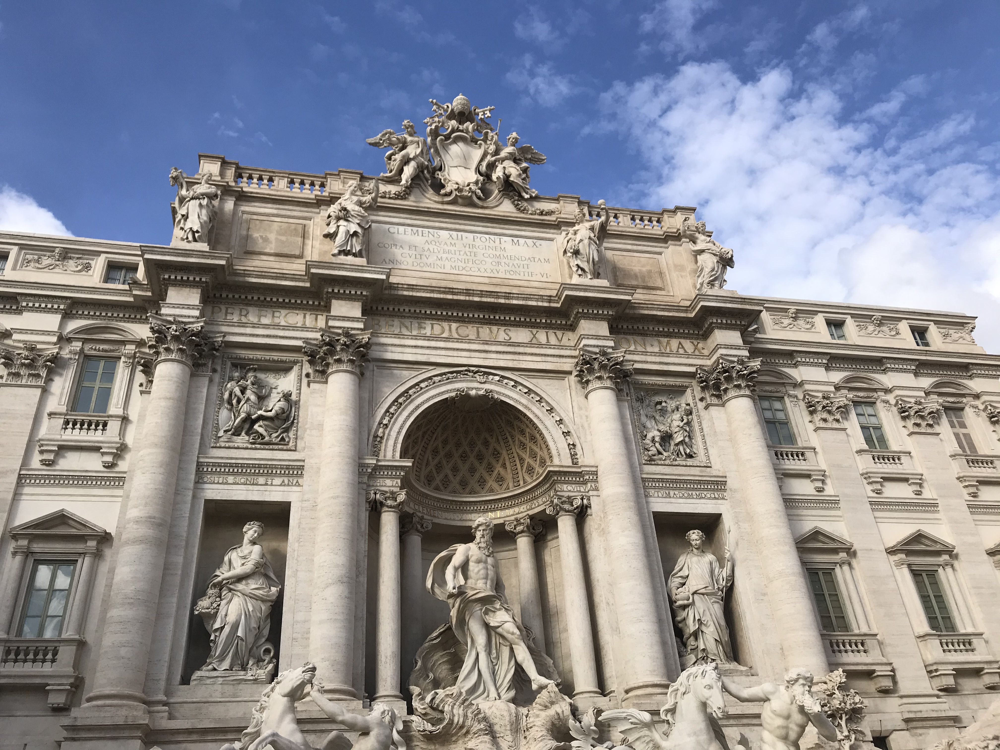
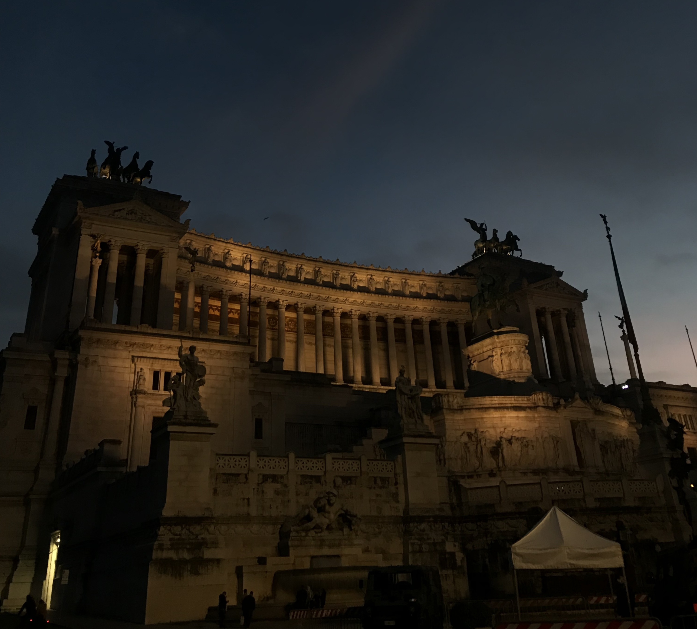
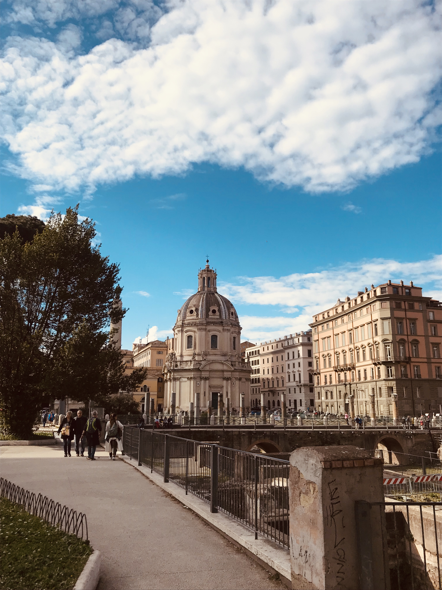
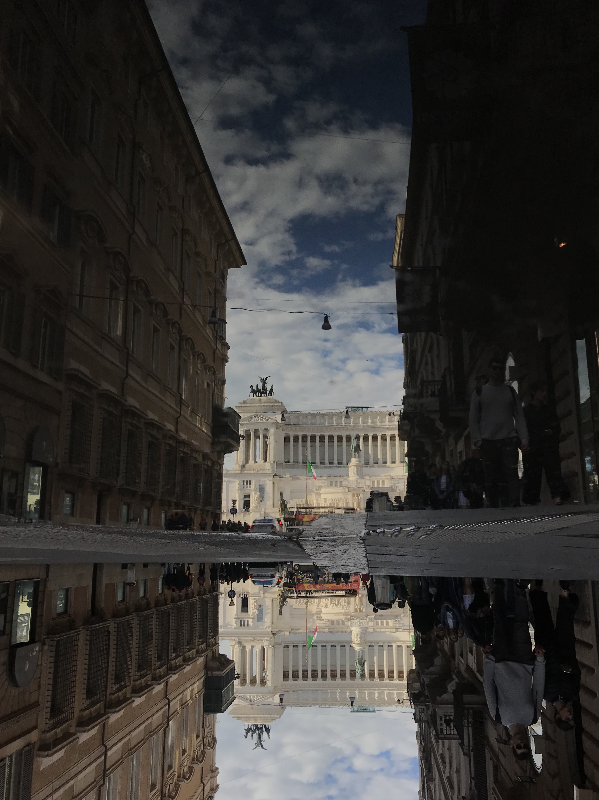
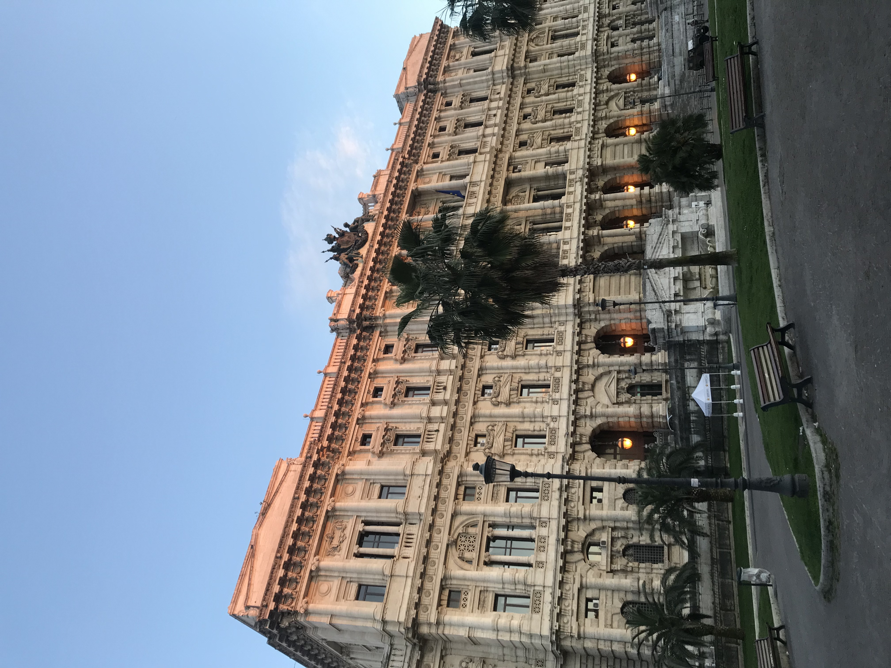

Roma semantica
Oltre i confini amministrativi: un arricchimento semantico delle aree urbane di Roma in DBpedia
Abstract
Le città non sono soltanto insiemi di dati geografici e amministrativi, ma luoghi caratterizzati da identità sociali, culturali e simboliche che contribuiscono a definirne la percezione. Questo progetto esplora la rappresentazione dei quartieri di Roma all'interno di DBpedia e propone un arricchimento semantico con l'obiettivo di descriverne l'identità urbana.
Roma attraverso i nostri occhi
Le seguenti fotografie rappresentano alcuni scorci famosi e significativi della città e dei quartieri analizzati. Questa galleria offre una prospettiva visiva che affianca la rappresentazione semantica proposta dal Knowledge Graph.








Membri del team
- Angelica Ponchio
- Caterina Ghiani
- Ginevra Severino
- Sara Scopel